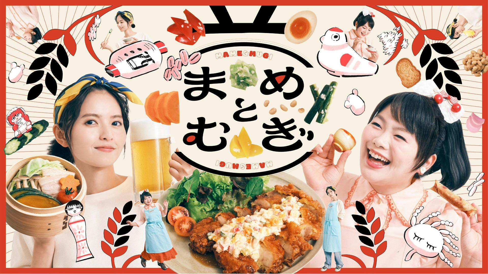

Mame to Mugi (2026)
まめとむぎ

Shimizu Mugi adalah mantan editor majalah mode berusia tiga puluh tahun yang telah kehilangan karier, impian, dan kehidupan cintanya, hingga membuatnya berada di titik terendah. Sementara itu, Yoneda Mame adalah seorang penggemar makanan fermentasi berusia dua puluh tiga tahun yang mengelola Izakaya Daizudo namun kesulitan menarik pelanggan.
Saat dua pribadi yang sangat bertolak belakang ini bertemu, mereka bertekad mengubah restoran tersebut dengan memadukan pengalaman Mugi sebagai editor dan keahlian kuliner Mame.
Melalui hidangan fermentasi yang lezat serta interaksi dengan para pengunjung restoran, keduanya menemukan cara menjalani hidup yang sesuai dengan jati diri mereka dan mulai menata kembali kehidupan masing-masing.